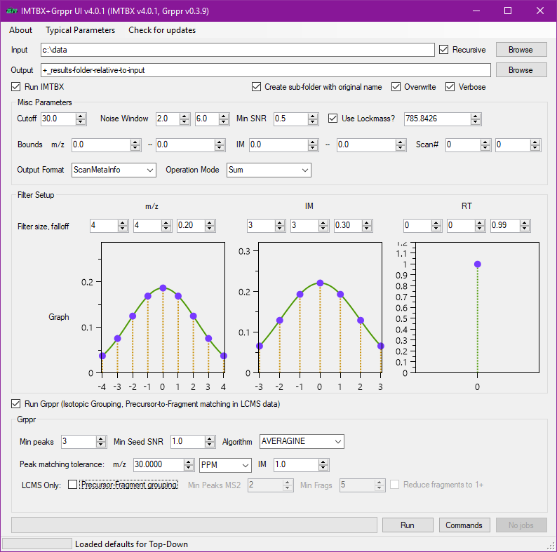

IMTBX + Grppr: Toolset for Top-Down IM-MS¶
IMTBX + Grppr is a data processing toolkit for ion mobility mass spectrometry data.
Application: Top-Down, direct infusion¶
The image below is a screenshot from the included data viewer. 500 spectra averaged (the background 2D map image), raw peak detection by IMTBX (not displayed in this view), grouping peaks into isotopic clusterswith Grppr (purple series of arrows overlaid on top of 2D map).
Application: Bottom-Up, LCMS ESI data¶
The movie below was made with the included data viewer. Data from Waters Synapt G2, typical proteomics bottom-up LC/MS run with electrospray ionization. IMTBX signal detection in LC-IM-MS data:

Raw unprocessed data from the instrument, LC-IM-MS:
Graphical User Interface¶
To simplify running the software suite, we provide a GUI to start both programs.

Supported data formats¶
It currently only fully supports data from Waters' ion mobility equipped
instruments (.raw directories). However, if you have data that you think
is similar and want to try it out, please leave a ticket
in the issue tracker.
Original Manuscript
Dmitry M. Avtonomov, Daniel A Polasky, Brandon T. Ruotolo, and Alexey I. Nesvizhskii. "IMTBX and Grppr: Software for Top-Down Proteomics Utilizing Ion Mobility-Mass Spectrometry", Analytical Chemistry, 2018.